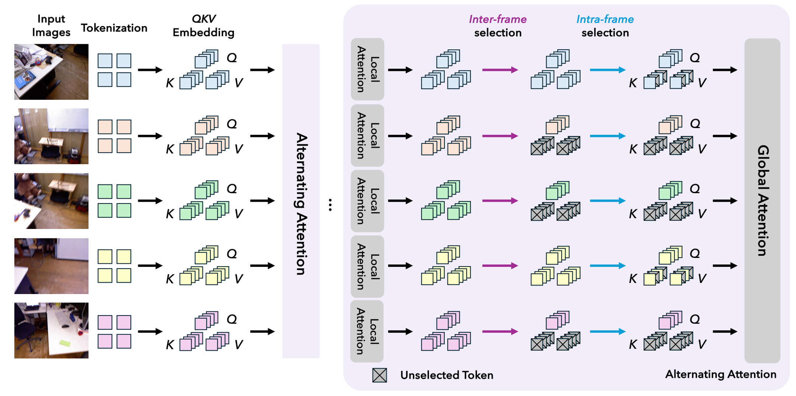

Visual geometry transformers have become powerful architectures for multi-view 3D reconstruction, enabling joint prediction of multiple 3D attributes in a feed-forward manner. However, their computational cost grows quadratically with the input sequence length due to the global attention layers inside these models. This limits both their scalability and efficiency.
In this work, we address this challenge with a simple yet general strategy: restricting the number of key/value tokens that each query interacts with during global attention. To achieve effective token selection, we introduce a two-stage framework. First, an inter-frame selection step operates at the frame level to identify frames that should be preserved. Second, an intra-frame selection step further discards more redundant tokens within the selected frames.
Our analysis highlights the advantage of a diversity-based strategy for inter-frame selection, which ensures broad coverage of the scene. For intra-frame selection, we show that layer-aware sparsification is necessary, with the selection process guided by the entropy of the global attention pattern. Our approach offers a superior speed-accuracy trade-off compared to existing solutions. Extensive experiments show that it accelerates visual geometry transformers by over 85% for scenes with 500 images while maintaining, or even improving, baseline performance, which hints that how our token selection strategy can play a crucial role in future applications of visual geometry transformers.

Quantitative comparisons on camera pose estimation across 7-Scenes, Neural RGB-D, and TUM-Dynamics. Best is bold and second best is underlined, excluding the base model row.
Our method (with inter-frame selection budget K=25) outperforms other methods in accelerating visual geometry transformers, and in some scenarios even achieves better performance than the base model.
| Method | 7-Scenes | Neural RGB-D | TUM-Dynamics | ||||||
|---|---|---|---|---|---|---|---|---|---|
| ATE ↓ | RPE-rot ↓ | RPE-trans ↓ | ATE ↓ | RPE-rot ↓ | RPE-trans ↓ | ATE ↓ | RPE-rot ↓ | RPE-trans ↓ | |
| VGGT (Base Model) | 0.0698 | 0.4953 | 0.0178 | 0.0374 | 0.2934 | 0.0186 | 0.0118 | 0.3083 | 0.0098 |
| FastVGGT | 0.0727 | 0.4254 | 0.0159 | 0.0377 | 0.1985 | 0.0168 | 0.0127 | 0.3154 | 0.0108 |
| SparseVGGT (SR: 50%) | 0.0723 | 0.4608 | 0.0167 | 0.0402 | 0.2946 | 0.0202 | 0.0125 | 0.3114 | 0.0102 |
| SparseVGGT (SR: 75%) | 0.0735 | 0.4583 | 0.0169 | 0.0462 | 0.2717 | 0.0192 | 0.0127 | 0.3120 | 0.0103 |
| Co-Me | 0.0870 | 0.8105 | 0.0340 | 0.0626 | 0.4567 | 0.0336 | 0.0156 | 0.3438 | 0.0146 |
| LiteVGGT | 0.0798 | 0.6888 | 0.0238 | 0.0531 | 0.3311 | 0.0247 | 0.0145 | 0.3250 | 0.0119 |
| GoToHunt (Ours) (σ=2) | 0.0673 | 0.4471 | 0.0165 | 0.0267 | 0.1794 | 0.0162 | 0.0115 | 0.3087 | 0.0101 |
| GoToHunt (Ours) (σ=3) | 0.0677 | 0.4495 | 0.0166 | 0.0270 | 0.2409 | 0.0176 | 0.0119 | 0.3075 | 0.0102 |
| π3 (Base Model) | 0.0573 | 0.3389 | 0.0105 | 0.0251 | 0.1031 | 0.0098 | 0.0140 | 0.3073 | 0.0088 |
| Sparse-π3 (SR: 50%) | 0.0580 | 0.3369 | 0.0106 | 0.0313 | 0.1182 | 0.0115 | 0.0140 | 0.3068 | 0.0090 |
| Sparse-π3 (SR: 75%) | 0.0594 | 0.3387 | 0.0108 | 0.0478 | 0.1250 | 0.0124 | 0.0141 | 0.3094 | 0.0092 |
| Speed3R | 0.0591 | 0.3800 | 0.0133 | 0.0391 | 0.1735 | 0.0145 | 0.0193 | 0.3152 | 0.0103 |
| GoToHunt (Ours) (σ=2) | 0.0579 | 0.3445 | 0.0113 | 0.0292 | 0.1190 | 0.0123 | 0.0142 | 0.3075 | 0.0089 |
| GoToHunt (Ours) (σ=3) | 0.0570 | 0.3428 | 0.0112 | 0.0292 | 0.1192 | 0.0123 | 0.0144 | 0.3083 | 0.0089 |
Reconstructed point cloud using our method with the budget of each query only interacting with keys/values from 25 frames out of a sequence with up to 500 frames.
Thank the authors of MapAnything, CUT3R, FastVGGT, StreamVGGT, and many other inspiring works in the community.
@article{zheng2026goodtokenhunting,
title={Good Token Hunting: A Hitchhiker's Guide to Token Selection for Visual Geometry Transformers},
author={Shuhong Zheng and Michael Oechsle and Erik Sandström and Marie-Julie Rakotosaona and Federico Tombari and Igor Gilitschenski},
journal={arXiv preprint arXiv:2605.23892},
year={2026}
}